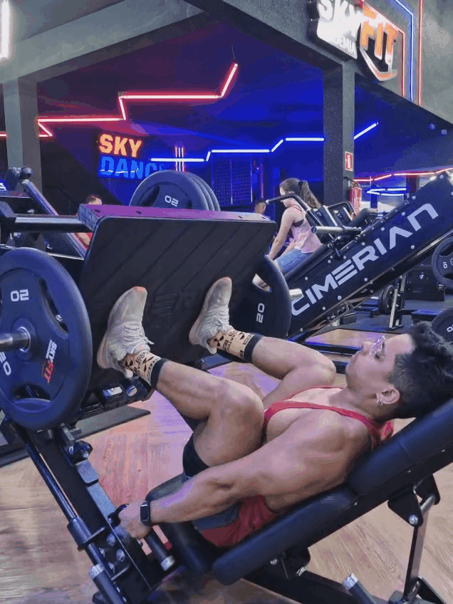
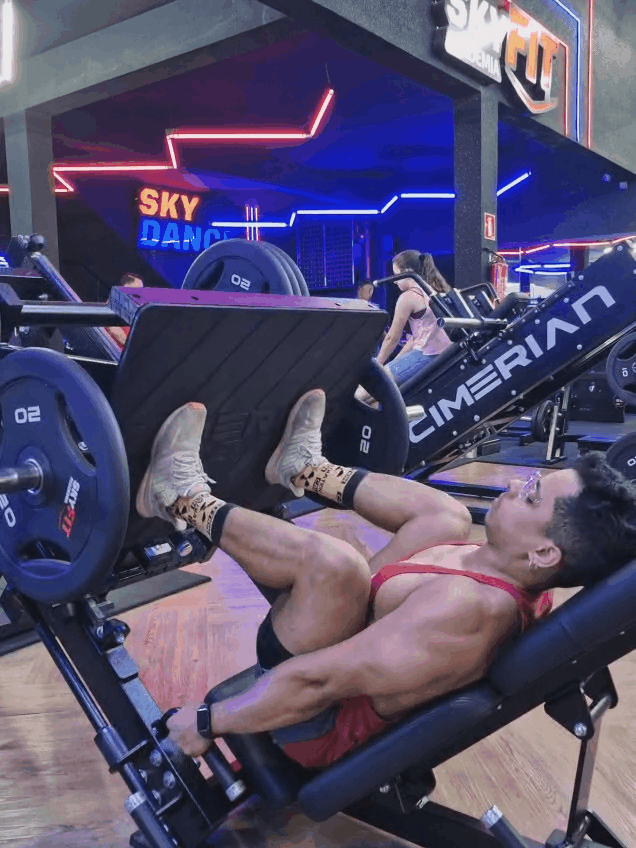
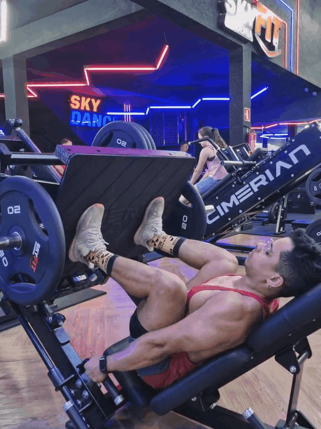

Localizados na parte interna da coxa, os músculos adutores são responsáveis por trazer a perna em direção à linha central do corpo. Eles desempenham um papel crucial na estabilização da pelve durante a caminhada e a corrida, além de serem importantes em movimentos laterais e chutes. Fortalecê-los ajuda a prevenir lesões na virilha e a manter o equilíbrio dos membros inferiores.
